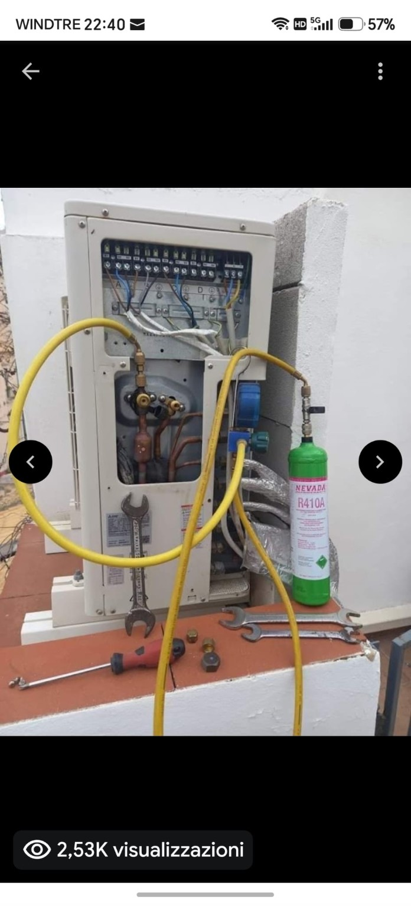
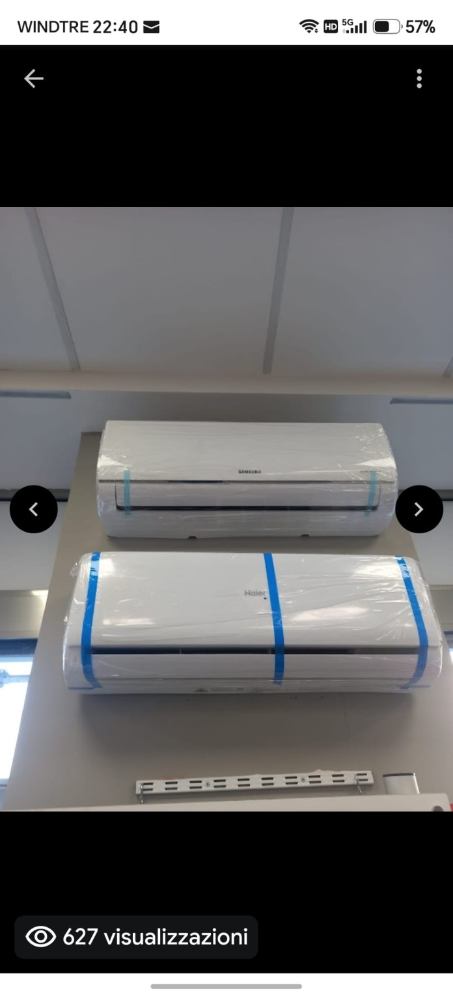

Vendita e scelta
Soluzioni mono, dual e multi split per diverse esigenze.
GIANLUCA LATINA • SIRACUSA
Soluzioni complete per climatizzazione: scelta e vendita del climatizzatore, installazione F-GAS, assistenza tecnica, ricarica gas, manutenzione e sanificazione.
IL SERVIZIO
Soluzioni mono, dual e multi split per diverse esigenze.
Montaggio e messa in servizio professionale.
Manutenzione, ricarica gas e sanificazione.
TUTTO IN UN’UNICA SCHEDA
PULIZIA E SANIFICAZIONE
Servizio di pulizia e sanificazione di climatizzatori e split, indicato per mantenere puliti filtri e componenti accessibili dell’unità interna e contribuire al corretto funzionamento dell’impianto.
INSTALLAZIONI E ASSISTENZA
Scorri installazioni e interventi reali, dalla posa degli split all’assistenza sulle unità esterne.




PARLIAMO DEL TUO PROGETTO
Scrivi modello o esigenza, zona dell’intervento e, se disponibile, invia una foto. Possiamo valutare vendita, installazione, assistenza, ricarica gas o sanificazione.